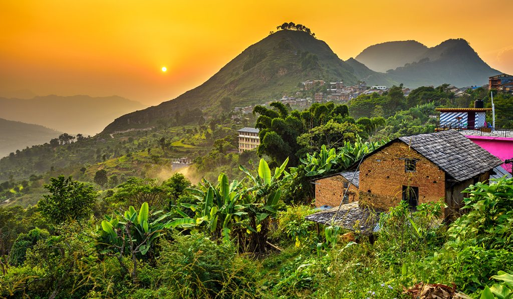
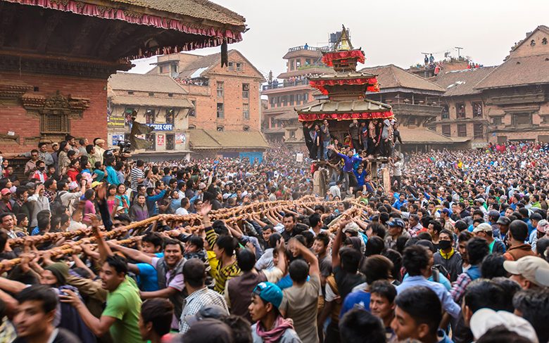
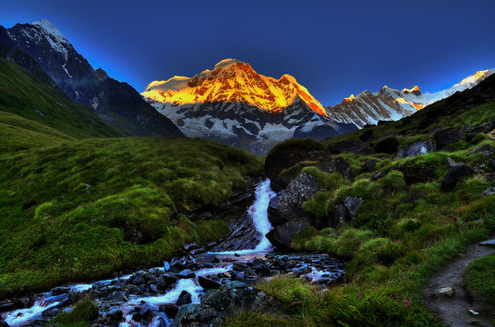
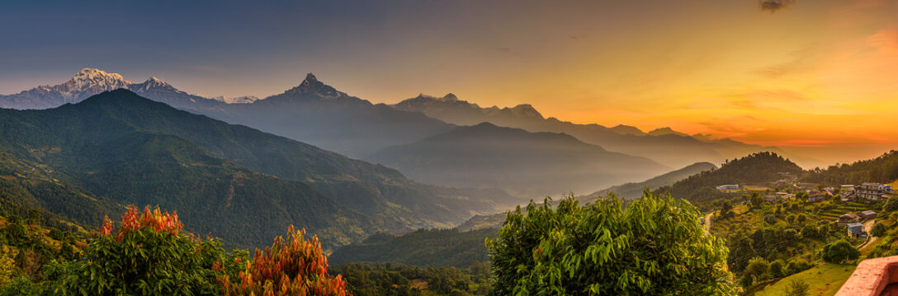

My Website
Resize the browser window to see the effect.
Visit to Bandipur
Nepal's Timeless Gem, April 5, 2026

Hidden Beauty of Bandipur.
The surroundings of this area are serene, which provides you plenty of chances to capture the artistic picture. The beauty of the Newar house, which has detailed woodwork, presents a magical historical charm. You can witness stone paved paths and traditional houses decorated with beautiful flowers.The locals of this area are mostly engaged in organic farming. You can interact with them and also take shots of their unique culture and lifestyle. In addition, you can visit the Bindabasini Temple, Ganesh Temple and Bandipur monastery to experience serene and spiritual ambiance of the place. Likewise, you can also explore the Teen Dhara area from where which gets the water from a natural source that the locals naturally use.
Festivals
Country full of Festivals, April 5, 2026

Nepali citizens celebrating Jatra.
Nepal is a country full of festivals with a variety of cultures co-existing in this small country. There’s a saying, ” Nepal has more festivals than the days in a year”. Every day is a day of celebration for one or the other community of Nepal.Festivals in Nepal are full of colors, lights, music, and food. From the unique dresses to the special decorations, festivals in Nepal are quite photo friendly. The best time to visit Nepal is during the festival season, which is from September to November. During this time, you can witness the vibrant culture of Nepal and capture some amazing photos of the festivals. Some of the most popular festivals in Nepal include Dashain, Tihar, Holi, and Teej. Each festival has its own unique traditions and customs, making it a great opportunity for photographers to capture the essence of Nepalese culture.

Patan Dhoka/ Durbar square is popular for tourist to Visit and learn about the history of Malla's written in every corner of the patan.
Beautiful Scenario of Nepal!



Follow Me
Email:shitansha0428@gmail.com Contact: +977-987654321